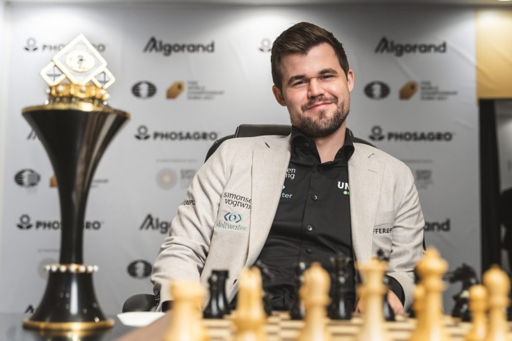
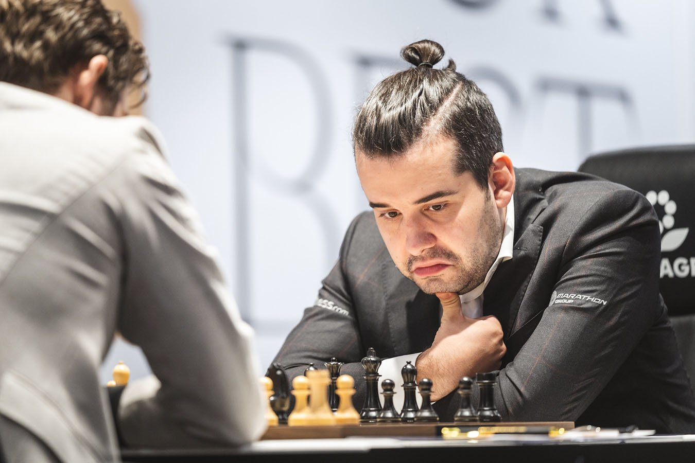

Матч за звание чемпиона мира по шахматам 2021
Матч за звание чемпиона мира по шахматам 2021 (57-й в истории шахмат) проходил с 24 ноября по 10 декабря 2021 года между действующим чемпионом мира Магнусом Карлсеном (Норвегия) и претендентом Яном Непомнящим (Россия) в Дубае
Предполагался матч не из 12 партий, как в 2018 году, а из 14 партий. 10 декабря, после одиннадцатой партии, матч закончился досрочно победой действующего чемпиона Магнуса Карлсена со счётом 7½ — 3½
Участники
Действующий чемпион
Магнус Карлсен
Возраст: 31 год
Рейтинг на момент начала матча: 2855
Претендент
Ян Непомнящий
Возраст: 31 год
Рейтинг на момент начала матча: 2782
Претендент на звание чемпиона мира — Ян Непомнящий, победитель двухкругового турнира претендентов, прошедшего в Екатеринбурге. Первоначально турнир должен был пройти с 15 марта по 5 апреля 2020 года, но после первого круга был приостановлен в связи с пандемией коронавируса. Вторая половина турнира была доиграна там же, в Екатеринбурге, с 19 по 27 апреля 2021 года.
Ключевой в поединке за шахматную корону стала 6 партия матча, прошедшая 3 декабря 2021 года. Данная партия побила рекорд по количеству ходов в партиях за звание чемпиона мира — 136 ходов. Предыдущий рекорд — 124 хода в матче Корчной — Карпов в 1978 году. Также это была первая партия за пять с лишним лет с классическим контролем времени в матчах за звание чемпиона мира, которая закончилась победой одного из игроков; до этого события такой результативной партией была 10-я партия матча 2016 года, в которой Магнус Карслен обыграл Сергея Карякина, после чего последовали 19 партий, все из которых закончились вничью.
После этой партии Ян совершил несколько грубых ошибок в следующих партиях и не смог найти свою игру. Некоторые из ошибок приводили чемпиона мира в настоящий шок: